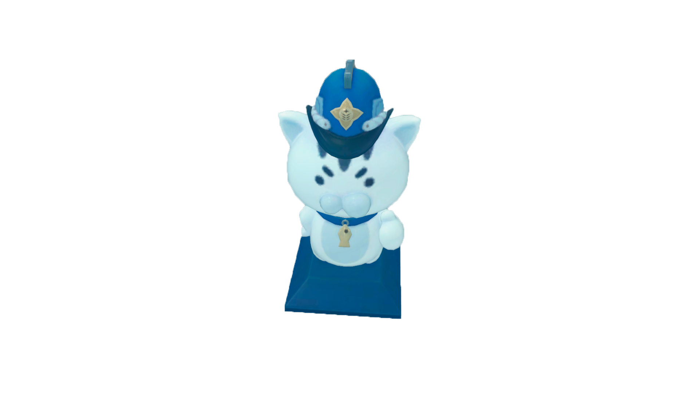

Información pública
Acerca de este portal
Este portal reúne información pública de la Seguridad Pública de Nueva Eridu. Su finalidad es facilitar la consulta de comunicados, campañas de prevención y documentación autorizada para su difusión ciudadana.
Consulta de información
El contenido se organiza por categoría y disponibilidad. Algunos documentos pueden presentar datos reservados, fragmentos censurados o restricciones de acceso para proteger a las personas involucradas y preservar las investigaciones en curso.
La ausencia de un expediente en el buscador no implica que el incidente no haya sido registrado.
Material audiovisual
Las grabaciones publicadas forman parte de campañas informativas o de registros cuya divulgación ha sido autorizada. Algunos materiales proceden de soportes antiguos y pueden presentar alteraciones de imagen, interrupciones de sonido o segmentos incompletos.
Si detecta diferencias entre una grabación y su transcripción, conserve el número de referencia del archivo para su revisión.
Atención ciudadana
Para consultar recomendaciones ante Cavidades, acceda al apartado de protocolos de seguridad. La documentación relacionada con personas desaparecidas y casos activos se actualizará cuando exista información autorizada para su publicación.
Administración del archivo
Los documentos de este portal están sujetos a revisión. Si un enlace deja de estar disponible, consulte los avisos de mantenimiento antes de intentar acceder nuevamente.
Equipo / Contacto
Integrantes del Equipo
Conoce a las personas responsables del proyecto y encuentra sus redes personales.

Alex Mercer
Desarrollador Lead
Arquitectura de la página, integración de módulos y mantenimiento del portal NEPS.

Maya Chen
Diseñadora UI/UX
Diseño visual, experiencia de usuario y adaptación táctica para dispositivos móviles.

Leo Navarro
Redactor de Contenido
Redacción institucional, identidad narrativa y supervisión de los comunicados públicos.
Sustituye los nombres, fotografías, roles, direcciones de correo y enlaces # por los datos reales del equipo.
NEPS, Zenless Zone Zero y sus personajes pertenecen a sus respectivos propietarios. Este proyecto no está afiliado ni respaldado por HoYoverse.